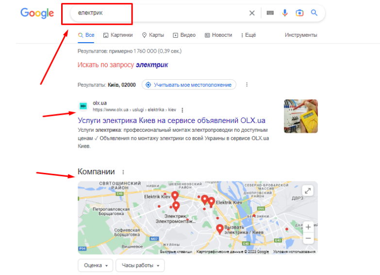
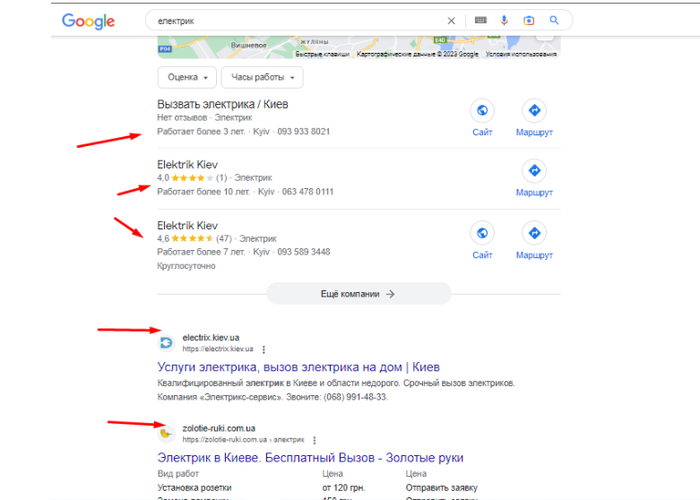
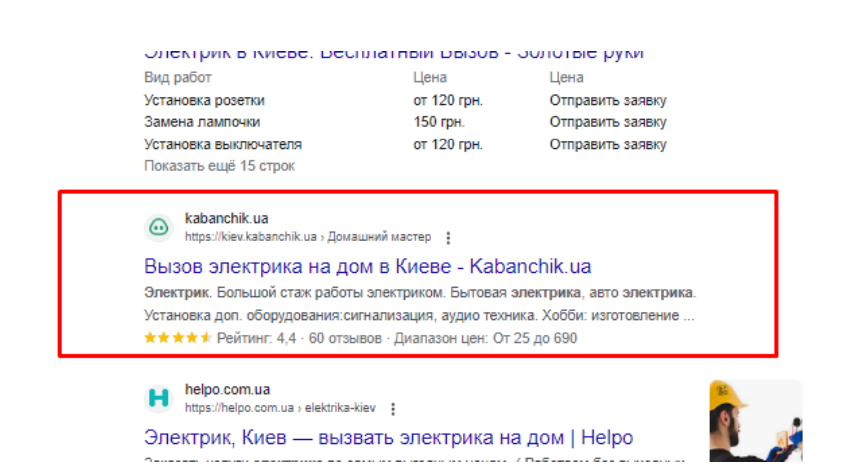

Запитання 2. Як ви плануєте збільшити GMV проекту? Опишіть 3 активності, які ви плануєте втілити в життя.
GMV залежить від середнього чека та загальній кількості замовлень. Тобто, якщо метою є збільшення GMV, то будемо працювати над збільшенням кількості замовлень та підняттям середнього чека.
- Виявлю напрямки платформи з найбільшим середнім чеком і спрямую маркетингові зусилля на залучення нових клієнтів та майстрів безпосередньо на них. Відповідно перерозподілю маркетинговий бюджет. Наприклад, аналізуючи GMV в розрізі кожної послуги, виявляю, що найбільший середній чек, який ми отримуємо зараз, - це від послуг електрика. Далі вивантажую перелік ключів по seo по цій послузі, дивлюся, які в ТОПі, а які нижче. Тестую:  В ТОП 1 не бачу Кабанчика, після топ-1 бачу карти, опускаюся нижче:  Йдуть 3 компанії по послугам електрика на карті, нижче ще 2 чужі сайти. Опускаємося ще нижче:  Нарешті сайт Кабанчика. Він на 4-му місці. Клієнти можуть і не дійти до нього. Тож треба підкріпити контекстною рекламою. Через певний період зроблю зріз, аналізуючи чи відбувся приріст GMV при заданому рівні ROI.
- Буду спрямовувати зусилля на утримання замовників на сервісі та збільшенні їх LTV. Це дозволить збільшити кількість замовлень.
Наразі, немає ніякої програми лояльності щодо замовників послуг. Саме через це бачу проблему в тому, що одноразово скориставшись сервісом та знайшовши спеціаліста, замовники далі діють «за спиною» сервісу, обходячи систему та комісію.
Треба розробити матеріальне та нематеріальне заохочення клієнтів повертатися на платформу знову та знову.
Ось варіанти, які ми зможемо як матеріальне заохочення для впровадження на сервісі:
- Знижки на наступні замовлення: Клієнти, які регулярно користуються сервісом та сплачують комісію, можуть отримувати знижки на наступні замовлення. Це може бути вигідно для тих, хто планує замовляти послуги регулярно, а не раз на півроку.
- Сервіс може пропонувати знижки на послуги виконавців, які отримують більше 50% замовлень через сервіс.
- Бонусні бали: Клієнти можуть отримувати бонусні бали за кожне замовлення, яке вони роблять через сервіс kabanchik.ua. Зібрані бали можна обмінювати на знижки на наступні замовлення або задонатити (як приклад)
- Персональний менеджер. Людям набагато приємніше, коли вони пишуть про свої проблемні місця конкретній людині, а не просто на пошту саппорта.
- Система статусів замовників. Статус буде змінюватися і кількістю закритих замовлень. Зараз ера гейміфікації, тож ідея має вистрелити.
- Працювати над підвищенням якості сервісу (як в технічному плані, так і в плані обслуговування клієнтів), над репутацією сервісу в інтернеті. Якщо зменшимо відтік майстрів та замовників з платформи – то примножимо GMV в рази знову ж таки, за рахунок збільшення кількості замовлень. Як варіант: дати можливість майстрам пропонувати свою ціну на роботу як альтернативу ціні замовника. Якщо замовник побачить, що ціна трохи вища, але й майстер ТОП-рівня – можливо погодиться на неї, а платформа заробить більше комісійних. Наразі є припущення, що багато майстрів навіть не розглядають пропозиції замовників через їх низьку вартість. І виходить, що або замовлення висить незакрите, або його беруть в роботу тільки новачки для напрацювання досвіду (що потім може вилитися в не дуже компетентну роботу).